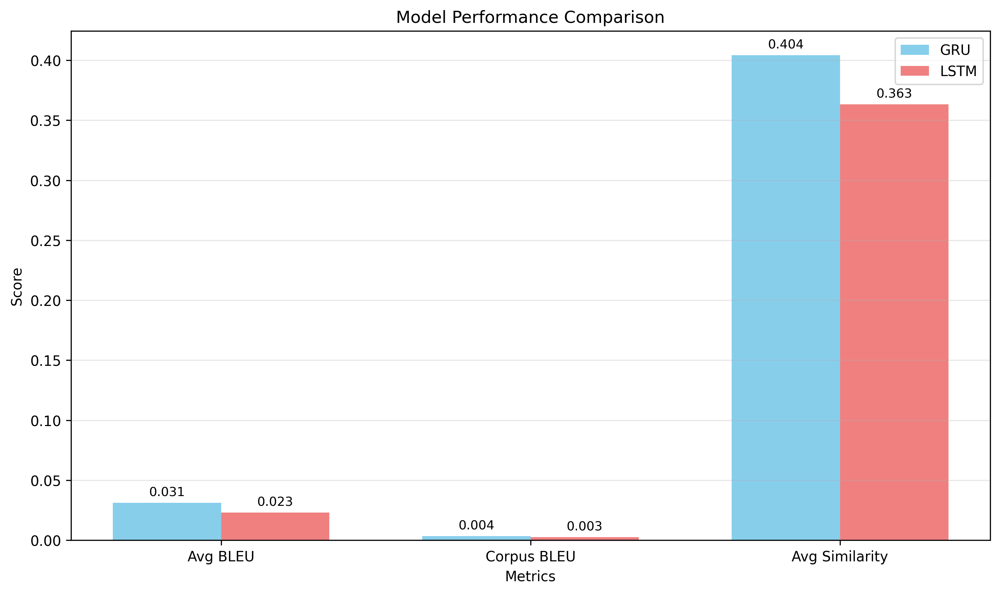
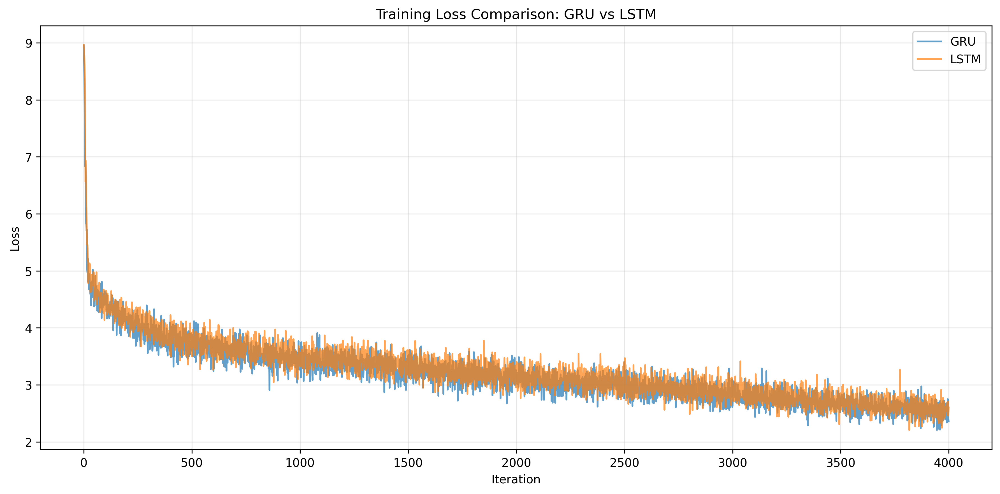
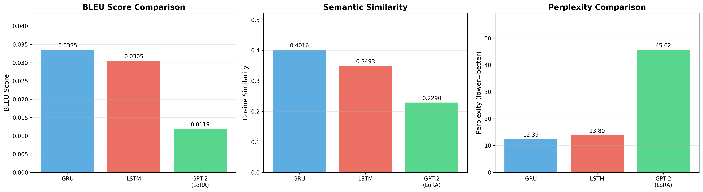
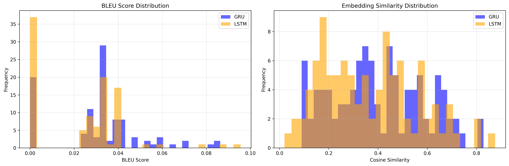

Does a fine-tuned transformer always beat a recurrent baseline? On a modest dialogue dataset under limited compute, a well-tuned GRU won on every metric.
Open-domain dialogue response generation on the Cornell Movie-Dialogs Corpus — 53,107 utterance pairs (47,797 train / 5,310 test), vocabulary 7,822, max length 10 tokens. The question: with limited data and a single GPU, does parameter-efficient fine-tuning of a large pretrained model beat a purpose-built small one?
| Model | Perplexity ↓ | BLEU ↑ | Embed similarity ↑ |
|---|---|---|---|
| GRU seq2seq | 12.39 | 0.0335 | 0.402 |
| LSTM seq2seq | 13.80 | 0.0305 | 0.349 |
| GPT-2 (LoRA) | 45.62 | 0.0119 | 0.229 |
The GRU swept every metric: 3.7× lower perplexity and 2.8× higher BLEU than the LoRA-tuned GPT-2, with far fewer trainable parameters. The GRU also edged the LSTM, reaching a lower final training loss (2.36 vs 2.60).




LoRA freezes most of GPT-2 and trains a small adapter — powerful when the base model already covers your domain, but movie dialogue is short, idiosyncratic and far from GPT-2's web-text prior. A from-scratch encoder–decoder, trained end-to-end on exactly this distribution, fit it better. Bigger and pretrained is not automatically better when the data is narrow and the compute is fixed.